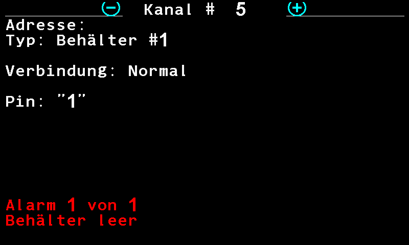

Einrichten
Der Sensor-Statusbildschirm
So lesen Sie den Statusbildschirm eines Sensors – Kanal, Adresse, Typ, Verbindungszustand, aktuelle Messwerte und aktive Alarme – und was jede Sensorart dort zeigt.
Sie erreichen ihn über „Information“ im Kontextmenü eines Sensors (Sensoreinstellungen). Er zeigt, was das Panel über einen Sensor weiß.
Der Bildschirm

- „Kanal #“ – der wievielte Sensor der ganzen Liste dies ist.
- Vorheriger Sensor – oder drücken Sie „MINUS“. Der Bildschirm bleibt offen.
- Nächster Sensor – oder drücken Sie „PLUS“.
- „Adresse:“ – die Adresse, auf der der Sensor antwortet. In dieser Anleitung nicht gezeigt.
- „Typ:“ – die Art des Sensors und seine Nummer, hier Behältersensor 1. Manche Sensoren zeigen statt der Adresse eine Zeile „Gerät:“ – wo sie angeschlossen sind, zum Beispiel „Bedienpanel“.
- „Verbindung:“ – der Zustand der Kommunikation. Tabelle unten.
- Die Messwerte dieser Sensorart – hier der Pegel am Eingang eines Behältersensors. Tabelle unten.
- „Alarm 1 von 1“ – die aktiven Alarme, jeweils einer. „UP“ / „DOWN“ blättern durch sie.
- Der Name des Alarms, der gezeigt wird.
| Taste | Wirkung |
|---|---|
| „PLUS“ / „MINUS“ | Nächster / vorheriger Sensor – der Bildschirm bleibt offen. |
| „UP“ / „DOWN“ | Blättert durch die aktiven Alarme dieses Sensors. |
| „MENU“ | Das Kontextmenü dieses Sensors. |
| „BACK“ | Zurück zur Sensorauswahl. |
Verbindungszustände
| Zustand | Bedeutung |
|---|---|
| „Normal“ | Der Sensor antwortet. |
| „Nicht überwacht“ | Der Sensor ist aus der Überwachung genommen: Weder die Kommunikation noch sonst etwas wird beobachtet. |
| „Keine Verbindung“ | Der Sensor antwortet nicht. Rot. |
| „Falscher Gerätetyp!“ | Etwas antwortet, aber nicht die Geräteart, die das Profil erwartet. Rot. |
| „SIMULIERT“ | Nur beim Geschwindigkeitssensor: Die Geschwindigkeit wird simuliert, nicht gemessen. Gelb. |
Die Messwerte werden nur gezeichnet, solange der Sensor unter Überwachung steht, antwortet und von der erwarteten Art ist. Ein Sensor außerhalb der Überwachung zeigt seine Kennung und sonst nichts.
Was jede Sensorart zusätzlich zeigt

| Sensor | Was der Bildschirm zeigt |
|---|---|
| Geschwindigkeitssensor | Die Impulsfrequenz F= in Hz; bei zwei Geschwindigkeitssensoren F1= und F2=. Darunter die beiden Grenzen „Min. Geschwindigkeit, km/h“ und „Max. Geschwindigkeit, km/h“. Bei einer Maschine, die ein Produkt mit Elektromotoren nach Masse dosiert, sind die Grenzen diejenigen, die die Motoren halten können, eingeengt durch die beiden Einstellungen; eine Grenze, die die Einstellungen nicht erreichen können, steht rot als Ungleichung. Ohne solche Motoren wird eine auf null gesetzte Grenze als ---- angezeigt, also abgeschaltet. |
| Behältersensor | Pin: und der Pegel am Eingang, „0“ oder „1“. |
| Dosierwellensensor | F= in Hz, auf drei Nachkommastellen. |
| Gebläsesensor | F= in Hz. |
| Drucksensor | P= in kPa. |
| Kornsensor, Trockendüngersensor | Status: und einer von acht Zuständen – unten. |
| Flüssigdünger-Durchflusssensor | Status: Betrieb, oder Betrieb:Fahrgasse im Fahrgassenmodus; darunter Durchfluss= in L/min. |
| Arbeitsstellungssensor | Position: Arbeit oder Position: Transport, sowie Pin: mit dem Pegel am Eingang. |
| Zündung, Öldruck, Batterieladung, Kraftstoffstand, Luftfilter | Pin: und der Pegel am Eingang, „0“ oder „1“. |
| Spuranzeigersensor | Nur die gemeinsamen Zeilen. |
| Fahrgassen-Aktuator | Status: Eingezogen, Ausgefahren, Betrieb, solange sich die Klappe bewegt, oder Unbekannt. |
| Dosierer-Elektromotor | Status: Betrieb, oder Defekt, solange ein Alarm des Motors aktiv ist; dann Letzter Fehler: mit dem Code des Controllers, falls es einen gab (Codes). Ein Universal-Controller fügt IN1[ ] IN2[ ] IN3[ ] mit den Pegeln seiner drei Eingänge hinzu. |
| Flüssigdünger-Pumpencontroller | Status: Betrieb oder Defekt. Bei einer Störung Letzter Fehler: und der Code. Ohne Störung: Durchfluss= in L/min, Last= in Prozent und Drucksensor: Nein, wenn keiner vorhanden ist, sonst Drucksensor= in Bar mit dem Rohsignal in mA in Klammern. Striche stehen für einen Wert, den der Controller nicht liefern kann. |
Die acht Zustände eines Korn- oder Düngersensors
| Status | Bedeutung |
|---|---|
| Betrieb | Normal. |
| Betrieb:Fahrgasse | Normal; der Sensor ist für den aktuellen Durchgang im Modus Fahrgassenüberwachung. |
| Konfiguration | Der Sensor hat neue Einstellungen erhalten und wendet sie an. |
| Kalibrierung läuft | Der Sensor führt seine Erstkalibrierung aus. Das dauert einige Sekunden. |
| Verstopft | Der Infrarot-Sender des optischen Kanals ist blockiert – höchstwahrscheinlich durch ein verstopftes Saatrohr. Rot. |
| Fremdlicht | Zu viel Sonnenlicht fällt in den optischen Kanal; der Sensor kann sich verzählen. Rot. |
| Defekt | Der Sensor ist ausgefallen und muss ersetzt werden. Rot. |
| Unbekannt | Eine andere Störung, die sich nicht bestimmen lässt. Rot. |
Ihre Maschine tut etwas, das diese Seite nicht beantwortet? Schreiben Sie an support@agriwelt.com — es antwortet ein Ingenieur.